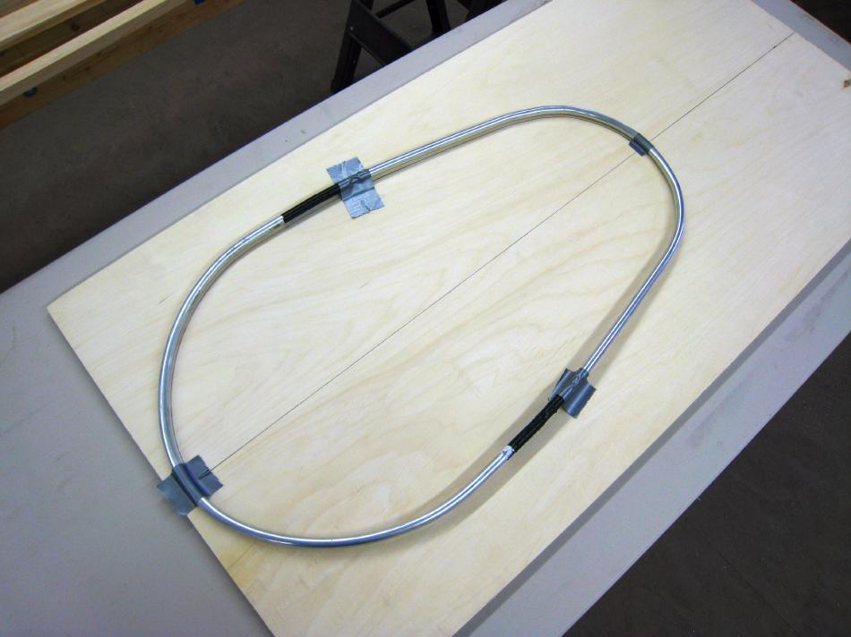

| Coaming | Menu Previous Page Next Page |
|

A coaming template can be first drawn on construction paper based on the offsets provided. It, like the aluminum coaming being used above, is traced onto the plywood sheet. Use the {Back} key to return.
|
|